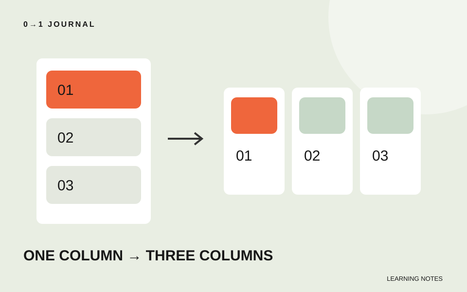

三枚のカードを常に横へ並べると、狭い画面では説明が細長くなります。カードの列数をCSS Gridで変えるときは、まず一列で読める状態を作り、横に並べる余裕がある幅で列を増やしましょう。
題材は架空の体験講座一覧です。CSS Gridは、要素を行と列に配置する仕組みです。ここでは自動で列数を算出する方法には広げず、一列と三列の二つを切り替える練習に絞ります。
カードの幅を固定する前に、親の列を決める
カードそれぞれに幅を指定する代わりに、三枚を囲む親で列を定義します。次はbodyに置く部分的なHTMLです。手元の練習ページで使い、続くCSSを適用してください。申込機能のない練習用一覧です。
<ul class="workshops">
<li><h2>紙の立体</h2><p>折り方を変えて形を比べます。</p></li>
<li><h2>色の観察</h2><p>身近なものから配色を探します。</p></li>
<li><h2>糸の模様</h2><p>二色の糸で模様を組みます。</p></li>
</ul>
一覧の順番はHTMLに書いた順にします。配置を変えるために文章の順序まで入れ替える必要はありません。見出しのレベルは周囲の文書構造に合わせ、この例ではページの主見出しの下にある講座名をh2としています。
一列を基本にし、広い画面だけ上書きする
.workshops {
display: grid;
grid-template-columns: minmax(0, 1fr);
gap: 1rem;
padding: 0;
margin: 0;
list-style: none;
}
.workshops > li {
padding: 1rem;
border: 1px solid #555;
overflow-wrap: anywhere;
}
@media (min-width: 48rem) {
.workshops {
grid-template-columns: repeat(3, minmax(0, 1fr));
}
}
grid-template-columnsは列の幅を定義する指定です。repeat(3, ...)で同じ指定を三回繰り返し、1frで残りの幅を分け合います。minmax(0, 1fr)は列の最小値を0にし、内容による最小幅に固定されないようにしています。MDNの列定義の説明で各構文を確認できます。
メディアクエリーは条件に応じてCSSを適用する仕組みです。この例の48remは練習用の切り替え位置で、端末の種類を保証する値ではありません。サイドバーなどで一覧の領域が狭いページでは、画面が広くても三列に十分な場所があるかを別に確認します。
三列になる境目で、文章の読みやすさを見る
画面を広げながら、三列へ変わった直後の講座名と説明を読みます。単語が一文字ずつ縦に続くようなら、カードの中身に対して切り替えが早すぎる可能性があります。数値を大きくして一列の範囲を広げる案を試してください。
カードに固定の高さを付けて説明を切ると、箱はそろっても情報が失われます。この例では高さを固定しません。三枚のうち一枚だけ説明を二倍にして、全文を読めるか確認します。列数の切り替えと、文字のはみ出しは別の点検項目です。
20分で、短い文と長い文を同じ一覧へ置く
三枚を作り、320px程度の狭い画面、切り替えの直前と直後、広い画面で比べます。列数、横スクロールの有無、説明の末尾が見えるかを記録してください。これらの幅は練習の目安です。
長い文字を試すときの考え方は、Flexboxの最小幅と折り返しの記事も参考になります。GridとFlexboxの指定をそのまま入れ替えず、今回の親要素がどちらで配置しているかを確認しましょう。無料レッスンで作った本文に一覧を加える場合も、内容の順番を保ったまま配置を変えるのが今回の課題です。
記載内容へのご質問や訂正のご連絡は、hello@junkbranding.comまでお願いします。